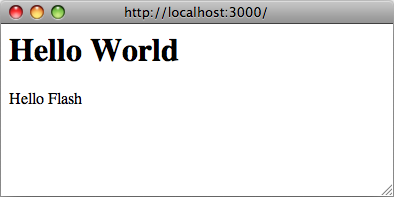
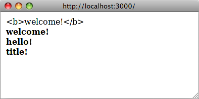

루비 I18n 프레임워크는 레일스 어플리케이션을 국제화/지역화 하는데 필요한 모든 방법을 제공해 줍니다. 그러나, 여러가지 플러그인과 확장모듈을 사용해서 기능을 추가할 수도 있습니다. 자세한 정보는 I18n Wiki를 보기 바랍니다. {원문·전체}
The Ruby I18n framework provides you with all necessary means for internationalization/localization of your Rails application. You may, however, use any of various plugins and extensions available, which add additional functionality or features. See the Rails I18n Wiki for more information.
1 루비온레일스 I18n이 동작하는 방법(How I18n in Ruby on Rails Works) {원문·전체}
국제화 과정은 매우 복잡합니다. 자연어는 여러가지 면(예를 들면, 복수형 규칙)에서 다르기 때문에 한번에 이 모든 문제를 해결할 수 있는 툴을 제공하기가 어렵습니다. 이러한 이유로해서, 레일스 I18n API는 아래의 내용에 대해서 중점을 둡니다. {원문·전체}
Internationalization is a complex problem. Natural languages differ in so many ways (e.g. in pluralization rules) that it is hard to provide tools for solving all problems at once. For that reason the Rails I18n API focuses on:
-
영어와 유사한 언어에 대해서는 특별한 추가 작업없이 바로 지원합니다. {원문·전체}
providing support for English and similar languages out of the box
-
기타 다른 언어에 대해서는 모든 것을 수정하고 확장하기 쉽게 지원합니다. {원문·전체}
making it easy to customize and extend everything for other languages
이러한 해법 중 가운데, 레일스 프레임워크 내의 모든 정적 문자열 - 예를 들어, 액티브레코드 유효성 검증 메시지, time과 date 포맷 - 을 국제화 하였고, 레일스 어플리케이션의 지역화 작업은 이러한 디폴트 값들을 변경하는 것을 의미합니다. {원문·전체}
As part of this solution, every static string in the Rails framework — e.g. Active Record validation messages, time and date formats — has been internationalized, so localization of a Rails application means "over-riding" these defaults.
1.1 라이브러리의 전체 구조(The Overall Architecture of the Library) {원문·전체}
I18n 젬은 두개의 파트로 나누어 집니다. {원문·전체}
Thus, the Ruby I18n gem is split into two parts:
-
i18n 프레임워크의 public API - 작동법을 정의한 public 메소드가 포함되어 있는 루비 모듈 {원문·전체}
The public API of the i18n framework — a Ruby module with public methods that define how the library works
-
public 메소드를 실행하는 디폴트 Simple 백엔드 {원문·전체}
A default backend (which is intentionally named Simple backend) that implements these methods
사용자로서 I18n 모듈의 public 메소드만을 접급해야만 하지만, 백엔드의 기능에서 대해서도 알아두면 도움이 됩니다. {원문·전체}
As a user you should always only access the public methods on the I18n module, but it is useful to know about the capabilities of the backend.
배포된 Simple 백엔드를 더 강력한 것으로 대체할 수 있고 때로는 더 바람직한 경우도 있는데, 이를 이용하면 번역 데이터를 관계형 데이터베이스, GetText 사전, 또는 유사한 것으로 저장할 수 있습니다. 아래에 있는 Using different backends를 참고하기 바랍니다. {원문·전체}
It is possible (or even desirable) to swap the shipped Simple backend with a more powerful one, which would store translation data in a relational database, GetText dictionary, or similar. See section Using different backends below.
1.2 Public I18n API 사용하기(The Public I18n API) {원문·전체}
I18n API에서 가장 중요한 메소드는 다음과 같습니다. {원문·전체}
The most important methods of the I18n API are:
translate # Lookup text translations localize # Localize Date and Time objects to local formats
이 메소드들은 단축형인 #t 와 #l 메소드를 가지고 있으며 다음과 같이 사용할 수 있습니다. {원문·전체}
These have the aliases #t and #l so you can use them like this:
I18n.t 'store.title' I18n.l Time.now
또한 아래의 속성에 대한 reader와 writer도 지원합니다. {원문·전체}
There are also attribute readers and writers for the following attributes:
load_path # Announce your custom translation files locale # Get and set the current locale default_locale # Get and set the default locale exception_handler # Use a different exception_handler backend # Use a different backend
이제 다음 챕터에서 간단한 레일스 어플리케이션에 대한 국제화 작업을 처음부터 시작해 보도록 하겠습니다. {원문·전체}
So, let's internationalize a simple Rails application from the ground up in the next chapters!
2 국제화를 위한 레일스 어플리케이션 셋업하기(Setup the Rails Application for Internationalization) {원문·전체}
몇가지 간단한 절차를 거치면, 어플리케이션에서 I18n을 지원하도록 할 수 있습니다. {원문·전체}
There are just a few simple steps to get up and running with I18n support for your application.
2.1 I18n 모듈 설정하기(Configure the I18n Module) {원문·전체}
설정보다는 규칙 철학에 따라 레일스는 의미있는 디폴트 값으로 어플리케이션을 셋업하게 됩니다. 다른 셋팅이 필요한 경우에는 쉽게 디폴트 값들을 변경할 수 있습니다. {원문·전체}
Following the convention over configuration philosophy, Rails will set up your application with reasonable defaults. If you need different settings, you can overwrite them easily.
레일스는 config/locales 디렉토리에 있는 .rb와 .yml 파일들을 번역 로드 경로 상에 자동으로 추가해 주게 됩니다. {원문·전체}
Rails adds all .rb and .yml files from the config/locales directory to your translations load path, automatically.
이 디렉토리에 있는 en.yml 디폴트 로케일은 번역 문자열의 샘플을 포함하고 있습니다. {원문·전체}
The default en.yml locale in this directory contains a sample pair of translation strings:
en: hello: "Hello world"
이것은, :en 로케일 상태에서 hello 키가 Hello world 문자열로 매핑된다는 것을 의미합니다. 레일스내의 모든 문자열은 이와 같은 방식으로 국제화 과정을 거치게 되는데, 예를 들어, 액티브레코드 유효성 검증 메시지는 activerecord/lib/active_record/locale/en.yml 파일에서, time과 date 포맷은 activesupport/lib/active_support/locale/en.yml 파일에서 볼 수 있습니다. YAML 또는 표준 루비 해시를 이용하여 디폴트 (Simple) 백엔트에 번역 결과물을 저장할 수 있습니다. {원문·전체}
This means, that in the :en locale, the key hello will map to the Hello world string. Every string inside Rails is internationalized in this way, see for instance Active Record validation messages in the activerecord/lib/active_record/locale/en.yml file or time and date formats in the activesupport/lib/active_support/locale/en.yml file. You can use YAML or standard Ruby Hashes to store translations in the default (Simple) backend.
I18n 라이브러리는 디폴트 로케일로 English를 사용하게 되는데, 예를 들어, 별도의 로케일을 추가로 지정하기 않는다면 :en 로케일을 이용하여 번역 결과물을 찾게 될 것입니다. {원문·전체}
The I18n library will use English as a default locale, i.e. if you don't set a different locale, :en will be used for looking up translations.
i18n 라이브러리는 로케일 키에 대해서 논의를 거쳐 실용적인 접근법을 취하는데, 일반적으로는 "언어"와 "지역설정" 또는 "방언(지역언어)"을 분리해서 :en-US 또는 :en-GB 과 같이 사용하지만, i18n에서는 지역설정 부분을 제외한 로케일 부분("언어")만을 포함해서 :en, :pl 과 같이 사용하게 됩니다. 많은 수의 국제화 어플리케이션은 :cs(체코어), :th(타이어), :es(스페인어)와 같이 특정 로케일의 "언어" 요소만을 사용합니다. 그러나, 같은 언어 그룹내에서도 지역간의 차이가 있을 수 있다는 것은 매우 중요합니다. 예를 들어, :en-US 로케일에서는 통화 표시로 $ 를 사용하지만, :en-GB에서는 £ 를 사용한다는 점입니다. 어떤 경우에도 이런 식으로 지역과 다른 기타 설정을 분리해서는 안되기 때문에 :en-GB 사전에 "English - United Kingdom"과 같이 전체 로케일을 제공해 주어야 합니다. Globalize3와 같은 다양한 Rails I18n plugins들을 이용하여 도움을 받을 수 있습니다. {원문·전체}
The i18n library takes a pragmatic approach to locale keys (after some discussion, including only the locale ("language") part, like :en, :pl, not the region part, like :en-US or :en-GB, which are traditionally used for separating "languages" and "regional setting" or "dialects". Many international applications use only the "language" element of a locale such as :cs, :th or :es (for Czech, Thai and Spanish). However, there are also regional differences within different language groups that may be important. For instance, in the :en-US locale you would have $ as a currency symbol, while in :en-GB, you would have £. Nothing stops you from separating regional and other settings in this way: you just have to provide full "English - United Kingdom" locale in a :en-GB dictionary. Various Rails I18n plugins such as Globalize3 may help you implement it.
번역 로드 경로 (I18n.load_path)는 자동으로 로딩되어 어플리케이션에서 사용하게 되는 번역 파일들에 대한 경로들을 포함하고 있는 루비 배열입니다. 따라서 이해할 수 있는 어떤 디렉토리와 번역 파일이라도 선택할 수 있습니다. {원문·전체}
The translations load path (I18n.load_path) is just a Ruby Array of paths to your translation files that will be loaded automatically and available in your application. You can pick whatever directory and translation file naming scheme makes sense for you.
i18n 백엔드는 최초로 특정 번역이 참조할 때 이러한 번역들이 로딩될 것입니다. 따라서 번역들이 이미 알려진 후에라도 다른 것으로 백엔드를 교체할 수 있습니다. {원문·전체}
The backend will lazy-load these translations when a translation is looked up for the first time. This makes it possible to just swap the backend with something else even after translations have already been announced.
디폴트 application.rb 파일은 다른 디렉토리로부터 로케일 파일들을 추가하고 디폴트 로케일을 다른 것으로 설정하는 방법에 대한 명령들을 가지고 있습니다. 특정 코드라인의 코멘트 표시를 제거하고 수정하기만 하면 됩니다. {원문·전체}
The default application.rb files has instructions on how to add locales from another directory and how to set a different default locale. Just uncomment and edit the specific lines.
# The default locale is :en and all translations from config/locales/*.rb,yml are auto loaded.
# config.i18n.load_path += Dir[Rails.root.join('my', 'locales', '*.{rb,yml}').to_s]
# config.i18n.default_locale = :de
2.2 옵션: I18n 설정 셋팅 변경하기(Optional: Custom I18n Configuration Setup) {원문·전체}
완벽을 기하기 위해서, 어떤 이유로해서 application.rb 파일을 사용하고 싶지 않을 경우에는, 손수 옵션들을 지정할 수 있습니다. {원문·전체}
For the sake of completeness, let's mention that if you do not want to use the application.rb file for some reason, you can always wire up things manually, too.
I18n 라이브러리에게 커스텀 번역 파일들을 검색할 위치를 알려주기 위해서는 어플리케이션 내 임의의 장소에 로드 경로를 명시하면 됩니다. 실제로 번역 파일들이 참조되기 전에 i18n 라이브러리가 구동되는 것만 확인하면 됩니다. 또한 디폴트 로케일을 변경할 수도 있습니다. 가장 간단하게는 임의의 초기화 파일내에 아래와 같이 코드라인을 추가하면 됩니다. {원문·전체}
To tell the I18n library where it can find your custom translation files you can specify the load path anywhere in your application - just make sure it gets run before any translations are actually looked up. You might also want to change the default locale. The simplest thing possible is to put the following into an initializer:
# in config/initializers/locale.rb
# tell the I18n library where to find your translations
I18n.load_path += Dir[Rails.root.join('lib', 'locale', '*.{rb,yml}')]
# set default locale to something other than :en
I18n.default_locale = :pt
2.3 로케일을 설정하여 넘기기(Setting and Passing the Locale) {원문·전체}
레일스 어플리케이션을 디폴트 로케일인 English 외의 다른 언어 로 번역하고자 한다면, application.rb 파일이나 위에서 언급한 바와 같이 임의의 초기화 파일에서 I18n.default_locale을 원하는 로케일로 설정해 주면 되며 이후에는 요청시마다 변경된 로케일이 유지될 것입니다. {원문·전체}
If you want to translate your Rails application to a single language other than English (the default locale), you can set I18n.default_locale to your locale in application.rb or an initializer as shown above, and it will persist through the requests.
그러나, 아마도 어플리케이션에서 더 많은 로케일에 대한 지원 을 제공하고자 할 것입니다. 이런 경우에는 요청시마다 특정 로케일을 지정하여 넘겨 줄 필요가 있습니다. {원문·전체}
However, you would probably like to provide support for more locales in your application. In such case, you need to set and pass the locale between requests.
선택한 로케일을 세션 이나 쿠키에 저장할 수도 있지만, 그렇게 하지 말 것을 권합니다. 로케일은 명시적으로 URL에 포함되어야 합니다. 이렇게 해야만 제대로 동작을 하게 되는데, 다른 사람에게 특정 URL을 보낼 때 그들도 동일한 페이지와 내용을 볼 수 있게 됩니다. 바로 이러한 방식을 RESTful이라고 합니다. RESTful 접근법에 대한 자세한 내용은 Stefan Tilkov's articles을 참고하기 바랍니다. 가끔 이런 방식에 대한 예외적인 상황이 있을 수 있는데, 이것에 대해서는 아래에서 다룰 것입니다. {원문·전체}
You may be tempted to store the chosen locale in a session or a cookie, however do not do this. The locale should be transparent and a part of the URL. This way you won't break people's basic assumptions about the web itself: if you send a URL to a friend, they should see the same page and content as you. A fancy word for this would be that you're being RESTful. Read more about the RESTful approach in Stefan Tilkov's articles. Sometimes there are exceptions to this rule and those are discussed below.
아주 쉽게 로케일을 설정 할 수 있습니다. 아래와 같이 ApplicationController 내의 before_action에 로케일을 설정해 주면 됩니다. {원문·전체}
The setting part is easy. You can set the locale in a before_action in the ApplicationController like this:
before_action :set_locale def set_locale I18n.locale = params[:locale] || I18n.default_locale end
이렇게 구현할 때는 http://example.com/books?locale=pt와 같이 URL 쿼리 파라미터로 로케일을 넘겨 주어야 합니다. 예를 들면, 구글에서는 이런 방식으로 접근합니다. 따라서 http://localhost:3000?locale=pt은 포르투칼어 로케일을, http://localhost:3000?locale=de은 독일어 로케일을 로드하게 될 것입니다. URL에 직접 로케일 정보를 넘겨 페이지를 다시 로딩하기를 원할 경우에는 다음 섹션을 건너띠고 바로 어플리케이션을 국제화하기 부분으로 이동할 수 있습니다. {원문·전체}
This requires you to pass the locale as a URL query parameter as in http://example.com/books?locale=pt. (This is, for example, Google's approach.) So http://localhost:3000?locale=pt will load the Portuguese localization, whereas http://localhost:3000?locale=de would load the German localization, and so on. You may skip the next section and head over to the Internationalize your application section, if you want to try things out by manually placing the locale in the URL and reloading the page.
물론, 모든 URL에 직접 로케일을 추가하기를 원치 않을 것이고 또는 예를 들어 대개 http://example.com/pt/books와 http://example.com/en/books 같은 방식으로 URL이 보이도록 하고 싶을 것입니다. 이제 다른 방식으로 접근해 보도록 하겠습니다. {원문·전체}
Of course, you probably don't want to manually include the locale in every URL all over your application, or want the URLs look differently, e.g. the usual http://example.com/pt/books versus http://example.com/en/books. Let's discuss the different options you have.
2.4 도메인명을 이용하여 로케일 설정하기(Setting the Locale from the Domain Name) {원문·전체}
한가지 옵션은 어플리케이션이 실행되는 도메인 이름을 이용하여 로케일을 설정하는 것입니다. 예를 들어, www.example.com 도메인은 English 또는 디폴트 로케일을 로드하고 www.example.es 도메인은 스페인어 로케일을 로드하기를 원할 수 있습니다. 이런 경우에는 최상위도메인명(TLD) 을 이용하여 로케일을 지정하면 됩니다. 이런 방식은 여러가지 장점을 가집니다. {원문·전체}
One option you have is to set the locale from the domain name where your application runs. For example, we want www.example.com to load the English (or default) locale, and www.example.es to load the Spanish locale. Thus the top-level domain name is used for locale setting. This has several advantages:
-
로케일이 URL의 일부분에 명시되어 있습니다. {원문·전체}
The locale is an obvious part of the URL.
-
사용자는 컨텐트가 어떤 언어로 표시될 것인지를 직관적으로 알게 됩니다. {원문·전체}
People intuitively grasp in which language the content will be displayed.
-
레일스에서 실행하는데 매우 미미한 작업입니다. {원문·전체}
It is very trivial to implement in Rails.
-
i18n의 검색 엔진은 다른 언어로 작성된 내용이 서로 연결되는 다른 도메인에 존재하는 것을 선호하는 것 같습니다. {원문·전체}
Search engines seem to like that content in different languages lives at different, inter-linked domains.
ApplicationController에 아래와 같이 코드라인을 추가하여 실행할 수 있습니다. {원문·전체}
You can implement it like this in your ApplicationController:
before_action :set_locale
def set_locale
I18n.locale = extract_locale_from_tld || I18n.default_locale
end
# Get locale from top-level domain or return nil if such locale is not available
# You have to put something like:
# 127.0.0.1 application.com
# 127.0.0.1 application.it
# 127.0.0.1 application.pl
# in your /etc/hosts file to try this out locally
def extract_locale_from_tld
parsed_locale = request.host.split('.').last
I18n.available_locales.include?(parsed_locale.to_sym) ? parsed_locale : nil
end
매우 비슷하게 서브도메인 을 이용하여 로케일을 지정할 수도 있습니다. {원문·전체}
We can also set the locale from the subdomain in a very similar way:
# Get locale code from request subdomain (like http://it.application.local:3000) # You have to put something like: # 127.0.0.1 gr.application.local # in your /etc/hosts file to try this out locally def extract_locale_from_subdomain parsed_locale = request.subdomains.first I18n.available_locales.include?(parsed_locale.to_sym) ? parsed_locale : nil end
어플리케이션내에 로케일을 변경하는 메뉴가 있다면 아래와 같이 코드작업을 할 수 있을 것입니다. {원문·전체}
If your application includes a locale switching menu, you would then have something like this in it:
link_to("Deutsch", "#{APP_CONFIG[:deutsch_website_url]}#{request.env['REQUEST_URI']}")
여기서는 APP_CONFIG[:deutsch_website_url]을 http://www.application.de와 같은 값으로 설정해 놓은 것으로 가정합니다. {원문·전체}
assuming you would set APP_CONFIG[:deutsch_website_url] to some value like http://www.application.de.
이와 같이 구현할 경우에 물론 이미 언급한 바와 같은 장점이 있지만, 다른 도메인 상에 다른 언어로 만든 것을 제공하는 것을 원치 않을 수 있습니다. 가장 확실한 해결책은 URL 파라메터나 요청경로상에 로케일 코드를 포함하는 것입니다. {원문·전체}
This solution has aforementioned advantages, however, you may not be able or may not want to provide different localizations ("language versions") on different domains. The most obvious solution would be to include locale code in the URL params (or request path).
2.5 URL Params로부터 로케일을 설정하기(Setting the Locale from the URL Params) {원문·전체}
로케일을 지정하여 넘겨주는 가장 일반적인 방법은 첫번째 예제에서 before_action에서 I18n.locale = params[:locale]와 같이 지정해 준 것처럼, URL params에 로케일 정보를 포함하는 것입니다. 따라서 이 경우에, URL은 www.example.com/books?locale=ja` 또는 www.example.com/ja/books와 같은 형태를 띨 것입니다. {원문·전체}
The most usual way of setting (and passing) the locale would be to include it in URL params, as we did in the I18n.locale = params[:locale] before_action in the first example. We would like to have URLs like www.example.com/books?locale=ja or www.example.com/ja/books in this case.
이러한 접근법은 도메인 이름을 이용하여 로케일을 저정하는 것과 같은 장점을 가지는데, 즉, RESTful 하고 WWW에 부합하는 방법입니다. 그러나 실행하기 위해서는 약간의 작업이 추가로 필요합니다. {원문·전체}
This approach has almost the same set of advantages as setting the locale from the domain name: namely that it's RESTful and in accord with the rest of the World Wide Web. It does require a little bit more work to implement, though.
params로부터 로케일 정보를 얻어서 그에 따라 지정하는 것을 어려운 일이 아닙니다. 즉, 모든 URL에 로케일을 포함하고 요청시에 넘겨는 주는 것입니다. link_to( books_url(locale: I18n.locale))와 같이 모든 URL에 명시적으로 옵션을 포함하는 것은 짜증스런 일이고 아마도 불가능한 일일지도 모릅니다. {원문·전체}
Getting the locale from params and setting it accordingly is not hard; including it in every URL and thus passing it through the requests is. To include an explicit option in every URL (e.g. link_to( books_url(locale: I18n.locale))) would be tedious and probably impossible, of course.
레일스는 ApplicationController#default_url_options을 이용하여 URL에 관한 동적인 결정사항을 집중시키는 하부구조를 가지고 있습니다. 이것은 이와 같은 시나리오 상에서 매우 유용합니다. 즉, 이 메소드를 변경하여 실행하므로써 url_for와 이것에 의존하는 헬퍼메소드에 대한 "디폴트" 값을 변경할 수 있게 해 줍니다. {원문·전체}
Rails contains infrastructure for "centralizing dynamic decisions about the URLs" in its ApplicationController#default_url_options, which is useful precisely in this scenario: it enables us to set "defaults" for url_for and helper methods dependent on it (by implementing/overriding this method).
이를 위해서, ApplicationController 내에 아래와 같이 코드를 추가해 줄 수 있습니다. {원문·전체}
We can include something like this in our ApplicationController then:
# app/controllers/application_controller.rb
def default_url_options(options={})
logger.debug "default_url_options is passed options: #{options.inspect}\n"
{ locale: I18n.locale }
end
root_path 또는 root_url와 같은 이름이 있는 라우트나, books_path 또는 books_url 등과 같은 리소스 라우트와 같이 url_for에 의존하는 모든 헬퍼 메소드는, http://localhost:3001/?locale=ja와 같이, 이제 쿼리 스트링에 자동으로 로케일을 포함 하게 될 것입니다. {원문·전체}
Every helper method dependent on url_for (e.g. helpers for named routes like root_path or root_url, resource routes like books_path or books_url, etc.) will now automatically include the locale in the query string, like this: http://localhost:3001/?locale=ja.
이 상태에서도 만족스러울 수 있지만, 어플리케이션내의 모든 URL 끝에 로케일이 붙게되면 URL의 가독성에 영향을 미칠 수 있습니다. 더우기 구조적인 관점에서 보면, 로케일은 계층적 구조상 대개 어플리케이션 도메인의 다른 부분의 상위에 존재하게 되기 때문에 URL은 이러한 점을 반영해야만 합니다. {원문·전체}
You may be satisfied with this. It does impact the readability of URLs, though, when the locale "hangs" at the end of every URL in your application. Moreover, from the architectural standpoint, locale is usually hierarchically above the other parts of the application domain: and URLs should reflect this.
아마도 English 로케일에서는 www.example.com/en/books와 같이, 네덜란드어 로케일에서는 www.example.com/nl/books와 같이 URL이 보이도록 하고 싶을 것입니다. 이것은 위에서 언급했던 "default_url_options을 변경"하는 전략을 이용하여 구현할 수 있습니다. 즉, 이때에는 아래와 같이 scoping 옵션을 이용하여 라우트를 지정해야만 합니다. {원문·전체}
You probably want URLs to look like this: www.example.com/en/books (which loads the English locale) and www.example.com/nl/books (which loads the Dutch locale). This is achievable with the "over-riding default_url_options" strategy from above: you just have to set up your routes with scoping option in this way:
# config/routes.rb scope "/:locale" do resources :books end
이제, books_path 메소드를 호출하게 되면 디폴트 로케일에 대해서 "/en/books" 경로를 얻게 될 것입니다. http://localhost:3001/nl/books와 같은 URL은 네덜란드어 로케일을 로드하게 되는데, 이후에 books_path 메소드를 호출하게 되면 로케일이 변경되었기 때문에 "/nl/books" 경로를 반환하게 되는 것이니다. {원문·전체}
Now, when you call the books_path method you should get "/en/books" (for the default locale). An URL like http://localhost:3001/nl/books should load the Dutch locale, then, and following calls to books_path should return "/nl/books" (because the locale changed).
라우트상에서 특정 로케일을 반드시 사용하지 않아도 되기 위해서는 아래와 같이 경로 scope을 옵션으로 사용할 수 있습니다. {원문·전체}
If you don't want to force the use of a locale in your routes you can use an optional path scope (denoted by the parentheses) like so:
# config/routes.rb scope "(:locale)", locale: /en|nl/ do resources :books end
이와 같이 하면, 로케일을 지정하지 않고 http://localhost:3001/books와 같이 리소스에 접근할 경우에도 Routing Error가 발생하기 않게 될 것입니다. 이것은 로케일이 지정되지 않아도 디폴트 로케일을 사용하고자 할 때 특이 유용할 것입니다. {원문·전체}
With this approach you will not get a Routing Error when accessing your resources such as http://localhost:3001/books without a locale. This is useful for when you want to use the default locale when one is not specified.
물론, 어플리케이션의 루트 URL에 대해서는 특별히 주의해야 합니다. 즉, http://localhost:3001/nl와 같은 URL은 제대로 작동하지 않게 되는데, routes.rb 파일에는 root to: "books#index"와 같이 선언되어 로케일을 고려하지 않았기 때문입니다. 당연한 것은 "root" URL은 단 하나나만 존재해야 합니다. {원문·전체}
Of course, you need to take special care of the root URL (usually "homepage" or "dashboard") of your application. An URL like http://localhost:3001/nl will not work automatically, because the root to: "books#index" declaration in your routes.rb doesn't take locale into account. (And rightly so: there's only one "root" URL.)
따라서 아래와 같이 URL의 매핑할 필요가 있습니다. {원문·전체}
You would probably need to map URLs like these:
# config/routes.rb get '/:locale' => 'dashboard#index'
라우트의 순서가 중요한데, 이 라우트 선언은 다른 라우트를 무효화하지 않게 됩니다. 때로는 root :to 선언 전에 이 라우트를 두고자 할 수도 있습니다. {원문·전체}
Do take special care about the order of your routes, so this route declaration does not "eat" other ones. (You may want to add it directly before the root :to declaration.)
이와 같은 방식으로 라우트를 쉽게 동작하게 하는 두개의 플러그인을 보기 바랍니다. Sven Fuchs의 routing_filter와 Raul Murciano의 translate_routes입니다. {원문·전체}
Have a look at two plugins which simplify work with routes in this way: Sven Fuchs's routing_filter and Raul Murciano's translate_routes.
2.6 클라이언트가 제공하는 정보를 이용하여 로케일을 지정하기(Setting the Locale from the Client Supplied Information) {원문·전체}
특별한 경우에는, URL로부터가 아니라 클라이언트가 제고한 정보를 이용하여 로케일을 지정하는 것이 합리적일 수 있습니다. 이러한 정보는 예를 들어 유저가 사용하는 브라우저에 설정되어 있는 선호되는 언어로부터 얻을 수 있고, 사용자가 접속하는 IP로부터 지리적인 위치를 알아낼 수도 있습니다. 또는 사용자가 어플리케이션의 인터페이스로부터 로케일을 지정하고 본인의 프로필에 저장한 것으부터 얻을 수 있습니다. 이러한 접근법은 웹사이트보다는 웹 어플리케이션이나 서비스에 적합합니다. 위에서 언급했던 sessions, cookies, RESTful 구조에 대한 박스내용을 참고하기 바랍니다. {원문·전체}
In specific cases, it would make sense to set the locale from client-supplied information, i.e. not from the URL. This information may come for example from the users' preferred language (set in their browser), can be based on the users' geographical location inferred from their IP, or users can provide it simply by choosing the locale in your application interface and saving it to their profile. This approach is more suitable for web-based applications or services, not for websites — see the box about sessions, cookies and RESTful architecture above.
2.6.1 Accept-Language 이용하기(Using Accept-Language) {원문·전체}
클라이언트가 제공하는 정보로 Accept-Language HTTP 헤더를 사용하할 수 있습니다. 사람들은 그들이 사용하는 브라우저 또는 curl과 같은 다른 클라이언트에 이 정보를 지정할 수 있습니다. {원문·전체}
One source of client supplied information would be an Accept-Language HTTP header. People may set this in their browser or other clients (such as curl).
Accept-Language 헤더를 이용한 간단한 실행 예는 아래와 같습니다. {원문·전체}
A trivial implementation of using an Accept-Language header would be:
def set_locale
logger.debug "* Accept-Language: #{request.env['HTTP_ACCEPT_LANGUAGE']}"
I18n.locale = extract_locale_from_accept_language_header
logger.debug "* Locale set to '#{I18n.locale}'"
end
private
def extract_locale_from_accept_language_header
request.env['HTTP_ACCEPT_LANGUAGE'].scan(/^[a-z]{2}/).first
end
물론, 운영 환경에서는 훨씬 더 완벽한 코딩이 필요한데 이 때는 Iain Hecker의 http_accept_language 또는 Ryan Tomayko의 locale과 같은 Rack 미들웨어를 플러그인으로 사용할 수 있습니다. {원문·전체}
Of course, in a production environment you would need much more robust code, and could use a plugin such as Iain Hecker's http_accept_language or even Rack middleware such as Ryan Tomayko's locale.
2.6.2 GeoIP (또는 이와 유사한) 데이터베이스를 이용하기(Using GeoIP (or Similar) Database) {원문·전체}
클라이언트 정보를 이용하여 로케일을 지정하는 또 다른 방법으로는 GeoIP Lite Country와 같은 클라이언트의 IP를 지역으로 매핑시기 위해 데이터베이스를 이용할 것입니다. 이 방법의 기전은 위에서 보여준 코드와 매우 비슷한데, 사용자의 IP에 대한 데이터베이스를 조회하여 국가/지역/도시에 해당하는 로케일을 찾아 반환하게 됩니다. {원문·전체}
Another way of choosing the locale from client information would be to use a database for mapping the client IP to the region, such as GeoIP Lite Country. The mechanics of the code would be very similar to the code above — you would need to query the database for the user's IP, and look up your preferred locale for the country/region/city returned.
2.6.3 사용자 프로파일(User Profile) {원문·전체}
또한 어플리케이션 인터페이스에서 사용자가 로케일을 지정하거나 변경할 수 있는 방법을 제공할 수 있습니다. 이 방법에 대한 기전 역시 위에서 보여준 코드와 매우 비슷하여 사용자로 하여금 드롭다운 목록에서 로케일을 선택하여 데이터베이스상의 본인의 프로필에 저장하도록 합니다. 이렇게 하여 로케일을 이 값으로 지정하게 되는 것입니다. {원문·전체}
You can also provide users of your application with means to set (and possibly over-ride) the locale in your application interface, as well. Again, mechanics for this approach would be very similar to the code above — you'd probably let users choose a locale from a dropdown list and save it to their profile in the database. Then you'd set the locale to this value.
3 어플리케이션을 국제화하기(Internationalizing your Application) {원문·전체}
자 이제 레일스 어플리케이션에서 I18n을 사용할 수 있도록 초기화 작업을 했고 어떤 로케일을 사용할 것인지와, 요청시마다 로케일을 유지하는 방법에 대해서 정의하였습니다. 제대로 설정이 되었다면 이제 정말 재미있는 작업을 할 준비가 된 것입니다. {원문·전체}
OK! Now you've initialized I18n support for your Ruby on Rails application and told it which locale to use and how to preserve it between requests. With that in place, you're now ready for the really interesting stuff.
어플리케이션을 국제화해 봅시다. 로케일에 따라 변경되는 부분을 추려서 지역화를 하면 되는데, 추려진 부분에 대한 번역을 하면 됩니다. {원문·전체}
Let's internationalize our application, i.e. abstract every locale-specific parts, and then localize it, i.e. provide necessary translations for these abstracts.
아마도 대부분 어플리케이션내에 아래와 같은 형태를 가지고 있을 것입니다. {원문·전체}
You most probably have something like this in one of your applications:
# config/routes.rb Yourapp::Application.routes.draw do root to: "home#index" end
# app/controllers/home_controller.rb
class HomeController < ApplicationController
def index
flash[:notice] = "Hello Flash"
end
end
# app/views/home/index.html.erb <h1>Hello World</h1> <p><%= flash[:notice] %></p>

3.1 번역 추가하기(Adding Translations) {원문·전체}
English로 번역된 두개의 문자열이 있습니다. 이 코드를 국제화하기 위해서, 이 문자열을 번역에 적합한 키로 레일스의 #t 헬퍼 메소드를 호출하여 대체합니다. {원문·전체}
Obviously there are two strings that are localized to English. In order to internationalize this code, replace these strings with calls to Rails' #t helper with a key that makes sense for the translation:
# app/controllers/home_controller.rb
class HomeController < ApplicationController
def index
flash[:notice] = t(:hello_flash)
end
end
# app/views/home/index.html.erb <h1><%=t :hello_world %></h1> <p><%= flash[:notice] %></p>
이 뷰 파일을 렌더링하면, :hello_world 와:hello_flash 키에 해당하는 번역이 없다는 에러 메시지가 보이게 될 것입니다. {원문·전체}
When you now render this view, it will show an error message which tells you that the translations for the keys :hello_world and :hello_flash are missing.
레일스가 뷰 템플릿에 t(translate) 헬퍼 메소드를 추가해 주기 때문에 I18n.t 라고 전체 스펠을 다 입력할 필요가 없게 됩니다. 또한 이 헬퍼 메소드는 해당 번역이 없을 경우 발생하는 에러 메시지를 <span class="translation_missing">로 감싸줍니다. {원문·전체}
Rails adds a t (translate) helper method to your views so that you do not need to spell out I18n.t all the time. Additionally this helper will catch missing translations and wrap the resulting error message into a <span class="translation_missing">.
사전 파일에 빠진 번역을 추가해 보도록 하겠습니다. 다시 말해, 지역화 작업을 하는 것입니다. {원문·전체}
So let's add the missing translations into the dictionary files (i.e. do the "localization" part):
# config/locales/en.yml en: hello_world: Hello world! hello_flash: Hello flash! # config/locales/pirate.yml pirate: hello_world: Ahoy World hello_flash: Ahoy Flash
아직 default_locale을 변경하지 않았기 때문에 I18n은 English를 사용할 것입니다. 이제 어플리케이션은 다음과 같이 보일 것입니다. {원문·전체}
There you go. Because you haven't changed the default_locale, I18n will use English. Your application now shows:
그리고 pirate 로케일을 URL(http://localhost:3000?locale=pirate)로 넘겨주게 되면 아래와 같은 결과를 보게 될 것입니다. {원문·전체}
And when you change the URL to pass the pirate locale (http://localhost:3000?locale=pirate), you'll get:
새로운 로케일 파일을 추가한 후에는 서버를 재시동해야 합니다. {원문·전체}
You need to restart the server when you add new locale files.
SimpleStore에 번역한 것을 저장하기 위해서 YAML (.yml)이나 루비 (.rb) 파일을 사용할 수 있습니다. YAML이 레일스 개발자 사이에는 선호되는 옵션입니다. 그러나, 이것은 중대한 단점이 하나 있습니다. YAML은 whitespace와 특수분자에 매우 예민하기 때문에 어플리케이션이 사전을 제대로 로드하지 못할 수 있다는 것입니다. 루비 파일은 최초 요청시에 어플리케이션을 중단하기 때문에 쉽게 문제를 발견할 수 있습니다. (YAML 사전을 사용할 때 "이상한 문제점"이 발생하면 사전의 해당부분만을 루비 파일로 작성해 보기 바랍니다.) {원문·전체}
You may use YAML (.yml) or plain Ruby (.rb) files for storing your translations in SimpleStore. YAML is the preferred option among Rails developers. However, it has one big disadvantage. YAML is very sensitive to whitespace and special characters, so the application may not load your dictionary properly. Ruby files will crash your application on first request, so you may easily find what's wrong. (If you encounter any "weird issues" with YAML dictionaries, try putting the relevant portion of your dictionary into a Ruby file.)
3.2 번역 결과물에 변수 넘기기(Passing variables to translations) {원문·전체}
번역 결과물에 변수를 사용하면, 뷰 파일에서 해당 변수에 값을 넘겨 줄 수 있습니다. {원문·전체}
You can use variables in the translation messages and pass their values from the view.
# app/views/home/index.html.erb <%=t 'greet_username', user: "Bill", message: "Goodbye" %>
# config/locales/en.yml
en:
greet_username: "%{message}, %{user}!"
3.3 Date/Time 포맷 추가하기(Adding Date/Time Formats) {원문·전체}
뷰에 타임스탬프를 추가해 봅시다. 그러면 date/time 지역화 기능을 테스트해 볼 수 있습니다. 시간 포맷을 지역화하기 위해서는 Time 객체를 I18n.l 이나 더 흔히 사용하는 레일스의 #l 헬퍼 메소드로 넘겨 주면 됩니다. 이 때 :format 옵션을 함께 넘겨 주면 타임 포맷을 지정할 수 있으며 디폴트로는 :default 포맷이 사용됩니다. {원문·전체}
OK! Now let's add a timestamp to the view, so we can demo the date/time localization feature as well. To localize the time format you pass the Time object to I18n.l or (preferably) use Rails' #l helper. You can pick a format by passing the :format option — by default the :default format is used.
# app/views/home/index.html.erb <h1><%=t :hello_world %></h1> <p><%= flash[:notice] %></p <p><%= l Time.now, format: :short %></p>
그리고 pirate 번역 파일에 임의의 time 포맷을 하나 추가해 봅시다. (English 로케일에 대해서는 레일스의 디폴트 키가 이미 존재합니다.) {원문·전체}
And in our pirate translations file let's add a time format (it's already there in Rails' defaults for English):
# config/locales/pirate.yml
pirate:
time:
formats:
short: "arrrround %H'ish"
그러면 다음과 같은 결과를 보여 주게 될 것입니다. {원문·전체}
So that would give you:
지금 당장 ('pirate' 로케일에 대해서) date/time 포맷을 몇가지 더 추가해서 I18n 백엔드 작업이 기대하는 바대로 작동하는지를 확인해 볼 수 있습니다. 물론, 누군가가 이미 해당 로케일에 대한 레일스의 디폴트 값들에 대한 번역작업을 해 놓았을 것입니다. 다양한 로케일 파일들을 원하면 rails-i18n repository at GitHub를 참고하기 바랍니다. 이 파일들을 config/locales 디렉토리에 복사해 두면 바로 사용할 수 있게 될 것입니다. {원문·전체}
Right now you might need to add some more date/time formats in order to make the I18n backend work as expected (at least for the 'pirate' locale). Of course, there's a great chance that somebody already did all the work by translating Rails' defaults for your locale. See the rails-i18n repository at GitHub for an archive of various locale files. When you put such file(s) in config/locales/ directory, they will automatically be ready for use.
3.4 다른 로케일에 대한 언어 변환(활용) 규칙(Inflection Rules For Other Locales) {원문·전체}
레일스 4.0은 English 외 다른 로케일에 대해서 단수 복수와 같은 단어의 변화규칙을 정의할 수 있게 지원합니다. config/initializers/inflections.rb 파일에서, 여러가지 로케일에 대해서 이러한 규칙을 정의할 수 있습니다. 이 초기화 파일에는 English에 대한 추가 규칙을 지정하는 디폴트 예문이 포함되어 있어서 다른 로케일에 대해서도 같은 포맷으로 지정하면 됩니다. {원문·전체}
Rails 4.0 allows you to define inflection rules (such as rules for singularization and pluralization) for locales other than English. In config/initializers/inflections.rb, you can define these rules for multiple locales. The initializer contains a default example for specifying additional rules for English; follow that format for other locales as you see fit.
3.5 뷰를 지역화하기(Localized Views) {원문·전체}
레일스 2.3부터 편리한 지역화 기능을 도입했습니다. 즉, 지역화된 뷰 템플릿으로 어플리케이션내에 BooksController 가 있다고 가정한다면, index 액션은 app/views/books/index.html.erb 템플릿을 렌더링하게 될 것입니다. 만약 동일한 디렉토리에 index.es.html.erb과 같은 지역화 템플릿을 만들어 두면, 로케일이 :es로 지정될 때 레일스는 이 템플릿을 렌더링하게 될 것입니다. 로케일을 다시 디폴트 로케일로 지정하면 index.html.erb 뷰가 렌더링될 것입니다. (향후 레일스 버전에서는 이러한 automagic 지역화 기능을 public 디렉토리에 있는 assets 에도 적용할 수 있을 것입니다.) {원문·전체}
Rails 2.3 introduces another convenient localization feature: localized views (templates). Let's say you have a BooksController in your application. Your index action renders content in app/views/books/index.html.erb template. When you put a localized variant of this template: index.es.html.erb in the same directory, Rails will render content in this template, when the locale is set to :es. When the locale is set to the default locale, the generic index.html.erb view will be used. (Future Rails versions may well bring this automagic localization to assets in public, etc.)
이러한 기능은 많은 양의 정적 컨텐츠이 포함되어 있는 뷰 파일로 작업을 할 때 모든 내용을 YAML 또는 루비 사전으로 포함하는 것은 효과적이지 못할 것입니다. 그러나 기억해 두어야 할 것은 나중에 해당 뷰 템플릿을 변경하게 될 경우 변경내용은 모든 사전에 알려져야 한다는 것입니다. {원문·전체}
You can make use of this feature, e.g. when working with a large amount of static content, which would be clumsy to put inside YAML or Ruby dictionaries. Bear in mind, though, that any change you would like to do later to the template must be propagated to all of them.
3.6 로케일 파일의 구성(Organization of Locale Files) {원문·전체}
i18n 라이브러리와 함께 배포되는 디폴트 SimpleStore를 사용할 경우, 사전은 디스크상에 텍스트 파일로 저장됩니다. 어플리케이션내의 모든 번역물을 로케일 당 하나의 파일에 두는 것은 관리하기 매우 힘들게 됩니다. 이러한 파일들을 적당한 계층구조로 저장할 수 있습니다. {원문·전체}
When you are using the default SimpleStore shipped with the i18n library, dictionaries are stored in plain-text files on the disc. Putting translations for all parts of your application in one file per locale could be hard to manage. You can store these files in a hierarchy which makes sense to you.
예를 들어 config/locales 디렉토리를 아래와 같이 구성할 수 있습니다. {원문·전체}
For example, your config/locales directory could look like this:
|-defaults |---es.rb |---en.rb |-models |---book |-----es.rb |-----en.rb |-views |---defaults |-----es.rb |-----en.rb |---books |-----es.rb |-----en.rb |---users |-----es.rb |-----en.rb |---navigation |-----es.rb |-----en.rb
이러한 방식으로 뷰 템플릿내의 텍스트로부터 모델과 모델 속성명을, "defaults"로부터 date와 time 포맷 등을 분리할 수 있습니다. i18n 라이브러리에 대한 다른 저장방법에서는 다른 식으로 분리할 수 있습니다. {원문·전체}
This way, you can separate model and model attribute names from text inside views, and all of this from the "defaults" (e.g. date and time formats). Other stores for the i18n library could provide different means of such separation.
레일스의 디폴트 로케일 로딩 기전은 위에서 언급한 바와 같이 중첩된 사전에서 로케일 파일을 로드하지 못합니다. 다라서 이러한 방식이 작동하기 위해서는 레일스에게 아래와 같이 명시적으로 중첩 검색을 하도록 알려 주어야 합니다. {원문·전체}
The default locale loading mechanism in Rails does not load locale files in nested dictionaries, like we have here. So, for this to work, we must explicitly tell Rails to look further:
# config/application.rb
config.i18n.load_path += Dir[Rails.root.join('config', 'locales', '**', '*.{rb,yml}')]
번역을 관리하는 툴 목록을 원할 경우에는 Rails i18n Wiki을 참고하기 바랍니다. {원문·전체}
Do check the Rails i18n Wiki for list of tools available for managing translations.
4 i18n API 기능의 개요(Overview of the I18n API Features) {원문·전체}
기본 레일스 어플리케이션을 국제화하기 위한 모든 사항을 알기 위해서는 i18n 라이브러리 사용법을 잘 알고 있어야 합니다. 따라서 좀 더 자세하게 기능을 알아보도록 하겠습니다. {원문·전체}
You should have good understanding of using the i18n library now, knowing all necessary aspects of internationalizing a basic Rails application. In the following chapters, we'll cover it's features in more depth.
아래와 같은 기능을 다루게 될 것입니다. {원문·전체}
Covered are features like these:
-
looking up translations
-
interpolating data into translations
-
pluralizing translations
-
using safe HTML translations
-
localizing dates, numbers, currency, etc.
4.1 번역 검색하기(Looking up Translations) {원문·전체}
4.1.1 기본 검색, 스코프, 중첩 키 사용하기(Basic Lookup, Scopes and Nested Keys) {원문·전체}
번역결과물은 심볼 또는 문자열 형태의 키로 검색하게 됩니다. 따라서 다음의 호출은 동일한 결과를 보여주게 됩니다. {원문·전체}
Translations are looked up by keys which can be both Symbols or Strings, so these calls are equivalent:
I18n.t :message I18n.t 'message'
translate 메소드는 :scope 옵션을 가질 수 있는데, 이 옵션을 통해서 특정 키에 대한 “네임스페이스” 또는 스코프를 명시하기 위해서 하나 이상의 키를 지정할 수 있습니다. {원문·전체}
The translate method also takes a :scope option which can contain one or more additional keys that will be used to specify a “namespace” or scope for a translation key:
I18n.t :record_invalid, scope: [:activerecord, :errors, :messages]
위의 코드는 Active Record error messages 중에서 :record_invalid 메시지를 찾게 됩니다. {원문·전체}
This looks up the :record_invalid message in the Active Record error messages.
더우기, 키와 스코프는 dot로 구분되는 키조합의 형태로 명시할 수 있습니다. {원문·전체}
Additionally, both the key and scopes can be specified as dot-separated keys as in:
I18n.translate "activerecord.errors.messages.record_invalid"
따라서 다음의 호출은 모두 동일한 결과를 보여 줄 것입니다. {원문·전체}
Thus the following calls are equivalent:
I18n.t 'activerecord.errors.messages.record_invalid' I18n.t 'errors.messages.record_invalid', scope: :active_record I18n.t :record_invalid, scope: 'activerecord.errors.messages' I18n.t :record_invalid, scope: [:activerecord, :errors, :messages]
4.1.2 디폴트값들(Defaults) {원문·전체}
:default 옵션을 사용하면 해당 번역결과물이 없을 경우 해당 값이 반환될 것입니다. {원문·전체}
When a :default option is given, its value will be returned if the translation is missing:
I18n.t :missing, default: 'Not here' # => 'Not here'
:default 값이 심볼일 경우에는, 해당 키로 검색되어 번역될 것입니다. 디폴트로 다중 값을 지정할 수 있습니다. 이 때는, 결과값을 반환하는 첫번째 것이 디폴트 번역이 될 것입니다. {원문·전체}
If the :default value is a Symbol, it will be used as a key and translated. One can provide multiple values as default. The first one that results in a value will be returned.
예를 들면, 제일 처음로 :missing 키를 검색하게 되고 해당 키 값이 없을 경우에는 :also_missing 키를 검색하게 됩니다. 두개의 키가 모두 번역결과물이 없을 경우 "Not here" 문자열이 반환될 것입니다. {원문·전체}
E.g., the following first tries to translate the key :missing and then the key :also_missing. As both do not yield a result, the string "Not here" will be returned:
I18n.t :missing, default: [:also_missing, 'Not here'] # => 'Not here'
4.1.3 다중 참조(Bulk and Namespace Lookup) {원문·전체}
한번에 복수개의 번역물을 참조할 경우에는 키 배열을 넘겨 주면 됩니다. {원문·전체}
To look up multiple translations at once, an array of keys can be passed:
I18n.t [:odd, :even], scope: 'errors.messages' # => ["must be odd", "must be even"]
물론, 하나의 키 참조 결과는 그룹화된 번역물들에 대한 해시형태로 반환될 것입니다. 예를 들면, 다음과 같이, 하나의 해시값으로 모든 액티브레코드 에러 메시지들을 얻을 수 있게 됩니다. {원문·전체}
Also, a key can translate to a (potentially nested) hash of grouped translations. E.g., one can receive all Active Record error messages as a Hash with:
I18n.t 'activerecord.errors.messages'
# => {:inclusion=>"is not included in the list", :exclusion=> ... }
4.1.4 "지연" 참조("Lazy" Lookup) {원문·전체}
레일스는 뷰 파일내에서 특정 로케일을 참조하기 위해 편리한 방법을 제공해 줍니다. 아래와 같은 사전을 가지고 있다고 가정할 때, {원문·전체}
Rails implements a convenient way to look up the locale inside views. When you have the following dictionary:
es:
books:
index:
title: "Título"
다음과 같이 (dot를 주목하기 바람) app/views/books/index.html.erb 템플릿 내 에서 books.index.title 값을 참조할 수 있습니다. {원문·전체}
you can look up the books.index.title value inside app/views/books/index.html.erb template like this (note the dot):
<%= t '.title' %>
4.2 삽입(Interpolation) {원문·전체}
많은 경우, 번역결과물내에 변수값을 삽입하기를 원합니다. 이러한 이유로 I18n API는 결과물내 변수값 삽입 기능을 제공합니다. {원문·전체}
In many cases you want to abstract your translations so that variables can be interpolated into the translation. For this reason the I18n API provides an interpolation feature.
#translate 메소드로 넘겨지는 :default와 :scope 외의 모든 옵션들은 번역결과물내에 삽입될 것이빈다. {원문·전체}
All options besides :default and :scope that are passed to #translate will be interpolated to the translation:
I18n.backend.store_translations :en, thanks: 'Thanks %{name}!'
I18n.translate :thanks, name: 'Jeremy'
# => 'Thanks Jeremy!'
삽입용 변수로 :default 또는 :scope를 사용할 경우에는, I18n::ReservedInterpolationKey 예외가 발생할 것입니다. 또한 번역결과물에 변수가 삽입된 경우 해당 변수값이 넘어가지 않으면 I18n::MissingInterpolationArgument 예외가 발생하게 됩니다. {원문·전체}
If a translation uses :default or :scope as an interpolation variable, an I18n::ReservedInterpolationKey exception is raised. If a translation expects an interpolation variable, but this has not been passed to #translate, an I18n::MissingInterpolationArgument exception is raised.
4.3 번역결과물의 복수형화(Pluralization) {원문·전체}
영어를 사용할 때는 특정 문자열에 대해서 하나의 단수형과 하나의 복수형이 존재합니다. 예를 들면, "1 message"와 "2 messages"와 같이... 다른 언어(아랍어, 일본어, 러시아어 등등)에서는 상이한 문법체계를 가지고 있어서 복수형이 여러개이거나 없는 경우가 있습니다. 따라서 I18n API는 이러한 모든 상황을 해결할 수 있는 복수형화 기능을 제공합니다. {원문·전체}
In English there are only one singular and one plural form for a given string, e.g. "1 message" and "2 messages". Other languages (Arabic, Japanese, Russian and many more) have different grammars that have additional or fewer plural forms. Thus, the I18n API provides a flexible pluralization feature.
:count 삽입 변수는 특이한 기능을 가지게 되는데, 단복수 두개의 폼이 번역결과물에 삽입되어서 복수형 규칙에 따라 단수 또는 복수형이 선택되도록 되어 있습니다. {원문·전체}
The :count interpolation variable has a special role in that it both is interpolated to the translation and used to pick a pluralization from the translations according to the pluralization rules defined by CLDR:
I18n.backend.store_translations :en, inbox: {
one: 'one message',
other: '%{count} messages'
}
I18n.translate :inbox, count: 2
# => '2 messages'
I18n.translate :inbox, count: 1
# => 'one message'
:en 에서의 복수형화 알고리듬은 다음과 같이 간단합니다. {원문·전체}
The algorithm for pluralizations in :en is as simple as:
entry[count == 1 ? 0 : 1]
즉, :one으로 표시된 번역은 단수형으로 other는 제로를 포함해서 복수형으로 사용됩니다. {원문·전체}
I.e. the translation denoted as :one is regarded as singular, the other is used as plural (including the count being zero).
해당 키에 대한 참조가 복수형화에 적합한 해시 구조를 반환하지 않을 경우에는, 18n::InvalidPluralizationData 예외가 발생하게 됩니다. {원문·전체}
If the lookup for the key does not return a Hash suitable for pluralization, an 18n::InvalidPluralizationData exception is raised.
4.4 로케일을 지정하고 넘겨주기(Setting and Passing a Locale) {원문·전체}
로케일은 I18n.locale 값으로 지정하거나 #translate 와 #localize 메소드에 옵션으로 넘겨 줄 수 있습니다. {원문·전체}
The locale can be either set pseudo-globally to I18n.locale (which uses Thread.current like, e.g., Time.zone) or can be passed as an option to #translate and #localize.
로케일을 넘겨 주지 않으면 I18n.locale 값이 사용됩니다. {원문·전체}
If no locale is passed, I18n.locale is used:
I18n.locale = :de I18n.t :foo I18n.l Time.now
Explicitly passing a locale:
I18n.t :foo, locale: :de I18n.l Time.now, locale: :de
I18n.locale은 :en 값을 디폴트 값으로 가지는 I18n.default_locale 값을 디폴트 값으로 가집니다. 이러한 디폴트 로케일값은 다음과 같이 지정할 수 있습니다. {원문·전체}
The I18n.locale defaults to I18n.default_locale which defaults to :en. The default locale can be set like this:
I18n.default_locale = :de
4.5 Safe HTML 번역 이용하기(Using Safe HTML Translations) {원문·전체}
'html'가 끝에 붙은 키와 'html'이라고 명명된 키들은 HTML safe로 표시됩니다. 따라서 뷰 템프릿에서 escaping없이 바로 사용하면 됩니다. {원문·전체}
Keys with a 'html' suffix and keys named 'html' are marked as HTML safe. Use them in views without escaping.
# config/locales/en.yml
en:
welcome: <b>welcome!</b>
hello_html: <b>hello!</b>
title:
html: <b>title!</b>
# app/views/home/index.html.erb
<div><%= t('welcome') %></div>
<div><%= raw t('welcome') %></div>
<div><%= t('hello_html') %></div>
<div><%= t('title.html') %></div>

5 커스텀 번역결과물 저장하는 방법(How to Store your Custom Translations) {원문·전체}
액티브서포트와 함께 배포되는 Simple 백엔드는 루비와 YAML 포맷으로 번역결과물을 저장할 수 있게 해 줍니다.2 [[[The Simple backend shipped with Active Support allows you to store translations in both plain Ruby and YAML format.]]]
예를 들어 번역물의 루비 해시 구조는 다음과 같습니다. {원문·전체}
For example a Ruby Hash providing translations can look like this:
{
pt: {
foo: {
bar: "baz"
}
}
}
동일한 내용에 대한 YAML 파일은 다음과 같습니다. {원문·전체}
The equivalent YAML file would look like this:
pt:
foo:
bar: baz
알다시피 두 경우에서, 최상위 키가 로케일에 해당합니다. :foo는 네임스페이스 키이고 :bar 는 "baz"에 대한 번역 키에 해당합니다. {원문·전체}
As you see, in both cases the top level key is the locale. :foo is a namespace key and :bar is the key for the translation "baz".
아래는 액티브서포트 en.yml 번역 YAML 파일의 "실제" 예입니다. {원문·전체}
Here is a "real" example from the Active Support en.yml translations YAML file:
en:
date:
formats:
default: "%Y-%m-%d"
short: "%b %d"
long: "%B %d, %Y"
아래의 모든 참조는 :short date 포맷인 "%b %d" 으로 동일한 값을 반환하게 될 것입니다. {원문·전체}
So, all of the following equivalent lookups will return the :short date format "%b %d":
I18n.t 'date.formats.short' I18n.t 'formats.short', scope: :date I18n.t :short, scope: 'date.formats' I18n.t :short, scope: [:date, :formats]
일반적으로 YAML 포맷을 사용할 것을 권합니다. 그러나, 특별한 날짜 포맷이 필요한 경우에는 로케인 데이터의 일부로 루비 lambda를 저장할 경우도 있습니다. {원문·전체}
Generally we recommend using YAML as a format for storing translations. There are cases, though, where you want to store Ruby lambdas as part of your locale data, e.g. for special date formats.
5.1 액티브레코드 모델에 대한 번역(Translations for Active Record Models) {원문·전체}
Model.model_name.human 와 Model.human_attribute_name(attribute) 메소드를 이용하면 모델과 모델의 속성명에 대한 번역을 명확하게 참조할 수 있습니다. {원문·전체}
You can use the methods Model.model_name.human and Model.human_attribute_name(attribute) to transparently look up translations for your model and attribute names.
예를 들면, 아래와 같이 번역을 추가할 경우, {원문·전체}
For example when you add the following translations:
en:
activerecord:
models:
user: Dude
attributes:
user:
login: "Handle"
# will translate User attribute "login" as "Handle"
User.model_name.human은 "Dude"를, User.human_attribute_name("login")은 "Handle" 값을 반환할 것입니다. {원문·전체}
Then User.model_name.human will return "Dude" and User.human_attribute_name("login") will return "Handle".
5.1.1 에러 메시지 스코프(Error Message Scopes) {원문·전체}
액티브레코드 유효성 검증 에러 메시지도 쉽게 번역할 수 있습니다. 액티브레코드는 메시지 번역을 연결하기 위한 몇가지 네임스페이스 키를 제공해 주는데, 특정 모델, 속성, 유효성 검증 등에 대한 상이한 메시지와 번역결과물을 제공할 수 있도록 해 줍니다. 또한 분명히 STI(single table inheritance)를 고려하여 지원하기도 합니다. {원문·전체}
Active Record validation error messages can also be translated easily. Active Record gives you a couple of namespaces where you can place your message translations in order to provide different messages and translation for certain models, attributes, and/or validations. It also transparently takes single table inheritance into account.
이렇게 하면, 어플리케이션의 요구에 따라 메시지를 변경할 수 있는 강력한 방법을 제공받게 됩니다. {원문·전체}
This gives you quite powerful means to flexibly adjust your messages to your application's needs.
다음과 같이 name 속성에 대한 유효성 검증을 가지는 User 모델을 예로 들어 보겠습니다. {원문·전체}
Consider a User model with a validation for the name attribute like this:
class User < ActiveRecord::Base validates :name, presence: true end
이 경우에 에러 메시지에 대한 키는 :blank가 됩니다. 액티브레코드는 네임스페이스로 이 키를 참조하게 될 것입니다. {원문·전체}
The key for the error message in this case is :blank. Active Record will look up this key in the namespaces:
activerecord.errors.models.[model_name].attributes.[attribute_name] activerecord.errors.models.[model_name] activerecord.errors.messages errors.attributes.[attribute_name] errors.messages
이렇게 해서, 이 예제에서는, 이러한 순서대로 키들을 참조하여 최초의 결과를 반환하게 될 것입니다. {원문·전체}
Thus, in our example it will try the following keys in this order and return the first result:
activerecord.errors.models.user.attributes.name.blank activerecord.errors.models.user.blank activerecord.errors.messages.blank errors.attributes.name.blank errors.messages.blank
모델이 상속된 경우에는 모델의 상속 계층구조를 따라 상위로 올라가면서 참조할 메시지를 찾게 됩니다. {원문·전체}
When your models are additionally using inheritance then the messages are looked up in the inheritance chain.
예를 들면, User 모델로부터 Admin 모델을 상속받는다고 가정을 해 보겠습니다. {원문·전체}
For example, you might have an Admin model inheriting from User:
class Admin < User validates :name, presence: true end
이때 액티브레코드는 아래와 같은 순서로 메시지를 참조하게 될 것입니다. {원문·전체}
Then Active Record will look for messages in this order:
activerecord.errors.models.admin.attributes.name.blank activerecord.errors.models.admin.blank activerecord.errors.models.user.attributes.name.blank activerecord.errors.models.user.blank activerecord.errors.messages.blank errors.attributes.name.blank errors.messages.blank
이렇게 해서, 모델상속 계층구조와 속성, 모델, 디폴트 스코프의 특정 시점에서 다양한 에러 메시지에 대한 번역을 할 수 있게 되는 것입니다. {원문·전체}
This way you can provide special translations for various error messages at different points in your models inheritance chain and in the attributes, models, or default scopes.
5.1.2 에러 메시지의 삽입(Error Message Interpolation) {원문·전체}
번역된 모델이름, 번역된 속성이름, 그리고 값은 항상 번역결과물에 삽입할 수 있습니다. {원문·전체}
The translated model name, translated attribute name, and value are always available for interpolation.
따라서, 예를 들면, 디폴트 에러 메시지인 "can not be blank" 대신에 다음과 같이 속성이름을 사용할 수 있습니다. 즉, "Please fill in your %{attribut}"와 같이 삽입할 수 있게 됩니다. {원문·전체}
So, for example, instead of the default error message "can not be blank" you could use the attribute name like this : "Please fill in your %{attribute}".
- 사용할 수 있다면
count를 이용하여 복수형화 작업을 할 수 있습니다. [[[count, where available, can be used for pluralization if present:]]]
| validation | with option | message | interpolation |
|---|---|---|---|
| confirmation | - | :confirmation | - |
| acceptance | - | :accepted | - |
| presence | - | :blank | - |
| length | :within, :in | :too_short | count |
| length | :within, :in | :too_long | count |
| length | :is | :wrong_length | count |
| length | :minimum | :too_short | count |
| length | :maximum | :too_long | count |
| uniqueness | - | :taken | - |
| format | - | :invalid | - |
| inclusion | - | :inclusion | - |
| exclusion | - | :exclusion | - |
| associated | - | :invalid | - |
| numericality | - | :not_a_number | - |
| numericality | :greater_than | :greater_than | count |
| numericality | :greater_than_or_equal_to | :greater_than_or_equal_to | count |
| numericality | :equal_to | :equal_to | count |
| numericality | :less_than | :less_than | count |
| numericality | :less_than_or_equal_to | :less_than_or_equal_to | count |
| numericality | :odd | :odd | - |
| numericality | :even | :even | - |
5.1.3 액티브레코드 error_messages_for 헬퍼메소드에 대한 번역(Translations for the Active Record error_messages_for Helper) {원문·전체}
액티브레코드 error_messages_for 헬퍼메소드를 사용한다면, 이 헬퍼에 대한 번역을 추가할 수 있습니다. {원문·전체}
If you are using the Active Record error_messages_for helper, you will want to add translations for it.
레일스는 다음과 같은 번역물이 내장되어 배포됩니다. {원문·전체}
Rails ships with the following translations:
en:
activerecord:
errors:
template:
header:
one: "1 error prohibited this %{model} from being saved"
other: "%{count} errors prohibited this %{model} from being saved"
body: "There were problems with the following fields:"
gem 'dynamic_form'을 추가하여 DynamicForm 젬을 설치해 주어야 합니다.
In order to use this helper, you need to install DynamicForm gem by adding this line to your Gemfile: gem 'dynamic_form'.
5.2 액션메일러 E-Mail Subject에 대한 번역(Translations for Action Mailer E-Mail Subjects) {원문·전체}
mail 메소드에 subject를 넘겨주지 않을 경우, 액션메일러는 번역결과물에서 해당 subject를 참조하려고 시도할 것입니다. 이 때 해당 키에 대해서 <mailer_scope>.<action_name>.subject와 같은 패턴을 이용하여 참조를 할 것입니다. {원문·전체}
If you don't pass a subject to the mail method, Action Mailer will try to find it in your translations. The performed lookup will use the pattern <mailer_scope>.<action_name>.subject to construct the key.
# user_mailer.rb
class UserMailer < ActionMailer::Base
def welcome(user)
#...
end
end
en:
user_mailer:
welcome:
subject: "Welcome to Rails Guides!"
5.3 I18n을 지원하는 기타 내장 메소드들에 대한 개요(Overview of Other Built-In Methods that Provide I18n Support) {원문·전체}
레일스는 몇가지 헬퍼메소드 내에서, (포맷 문자열과 기타 다른 포맷 등의) 정해진 문자열과 기타 지역화를 사용합니다. 아래에 이에 대한 전반적인 내용을 정리해 둡니다. {원문·전체}
Rails uses fixed strings and other localizations, such as format strings and other format information in a couple of helpers. Here's a brief overview.
5.3.1 액션뷰 헬퍼메소드(Action View Helper Methods) {원문·전체}
-
distance_of_time_in_words메소드는 결과를 번역하여 복수형화 작업을 수행하고 초, 분, 시 등의 값을 결과물에 삽입하게 됩니다. datetime.distance_in_words 번역에 대한 내용을 참고하기 바랍니다. {원문·전체}distance_of_time_in_wordstranslates and pluralizes its result and interpolates the number of seconds, minutes, hours, and so on. See datetime.distance_in_words translations. -
datetime_select와select_month메소드는 결과로 만들어지는 select 태그를 표시하기 위해 월 이름을 번역하여 사용합니다. date.month_names에서 번역관련 내용을 참고하기 바랍니다. 또한datetime_select는 명확하게 order 옵션을 넘겨 주지 않는 한, date.order로부터 order 옵션을 참조하게 됩니다. 모든 date 선택 헬퍼메소드는 가능한 경우 datetime.prompts 스코프에 있는 번역결과를 이용하여 프롬프트를 번역합니다. {원문·전체}datetime_selectandselect_monthuse translated month names for populating the resulting select tag. See date.month_names for translations.datetime_selectalso looks up the order option from date.order (unless you pass the option explicitly). All date selection helpers translate the prompt using the translations in the datetime.prompts scope if applicable. -
number_to_currency,number_with_precision,number_to_percentage,number_with_delimiter,number_to_human_size메소드들은 number 스코프에 있는 숫자 포맷을 이용합니다. {원문·전체}The
number_to_currency,number_with_precision,number_to_percentage,number_with_delimiter, andnumber_to_human_sizehelpers use the number format settings located in the number scope.
5.3.2 액티브모델 메소드(Active Model Methods) {원문·전체}
-
model_name.human와human_attribute_name은 activerecord.models 스코프에 정의되어 있는 경우 해당 모델의 이름과 속성이름에 대한 번역을 사용합니다. 또한 "에러 메시지 스코프"에서 설명한 바와 같이 상속받는 클래스이름(STI와 함께 사용할 경우)에 대한 번역도 지원합니다. {원문·전체}model_name.humanandhuman_attribute_nameuse translations for model names and attribute names if available in the activerecord.models scope. They also support translations for inherited class names (e.g. for use with STI) as explained above in "Error message scopes". -
액티브모델 유효성검증에서 사용하지만 직접 사용하기도 하는
ActiveModel::Errors#generate_message는 위에서 설명한 바와 같이model_name.human와human_attribute_name메소드를 사용합니다. 또한 이 메소드는 "에러 메시지 스코프"에서 언급한 바와 같이 에러 메시지를 번역하고 상속받은 클래스 이름에 대한 번역도 지원합니다. {원문·전체}ActiveModel::Errors#generate_message(which is used by Active Model validations but may also be used manually) usesmodel_name.humanandhuman_attribute_name(see above). It also translates the error message and supports translations for inherited class names as explained above in "Error message scopes". -
ActiveModel::Errors#full_messages는 errors.format로부터 참조되는 분리자을 사용하여 에러메시지 앞에 속성명을 덧붙여 줍니다. 디폴트로"%{attribute} %{message}"형태를 가집니다. {원문·전체}ActiveModel::Errors#full_messagesprepends the attribute name to the error message using a separator that will be looked up from errors.format (and which defaults to"%{attribute} %{message}").
5.3.3 액티브서포트 메소드(Active Support Methods) {원문·전체}
-
Array#to_sentence는 support.array 스코프에 있는 포맷 설정을 이용합니다. [[[Array#to_sentenceuses format settings as given in the support.array scope.]]]
6 I18n 설정 변경하기(Customize your I18n Setup) {원문·전체}
6.1 다른 백엔드 사용하기(Using Different Backends) {원문·전체}
여러가지 이유로해서, 액티브서포트와 함깨 배포된 Simple 백엔드는 루비온레일스[3]에 대해서 동작하는 가장 단순한 것만을 합니다. 이것은 English 또는 유사한 언어에 대해서만 동작을 보장할 수 있는 것을 의미합니다. 또한 Simple 백엔드는 번역물을 읽기만하고 동적으로 번역물을 저장하지 못합니다. {원문·전체}
For several reasons the Simple backend shipped with Active Support only does the "simplest thing that could possibly work" for Ruby on Rails[3] ... which means that it is only guaranteed to work for English and, as a side effect, languages that are very similar to English. Also, the simple backend is only capable of reading translations but can not dynamically store them to any format.
그러나 이러한 제한점에 국한될 필요는 없습니다. 루비 I18n 젬은 Simple 백엔드를 최적의 것으로 쉽게 교체할 수 있도록 작성되었습니다. 즉, 원할 경우 Globalize' Static 백엔드로 교체할 수 있습니다. {원문·전체}
That does not mean you're stuck with these limitations, though. The Ruby I18n gem makes it very easy to exchange the Simple backend implementation with something else that fits better for your needs. E.g. you could exchange it with Globalize's Static backend:
I18n.backend = Globalize::Backend::Static.new
여러개의 백엔드를 한꺼번에 연결하기 위해서 Chain 백엔드를 사용할 수 있습니다. 이것은 Simple 백엔드와 표준 번역을 사용하지만 커스텀 번역결과물을 데이터베이스나 다른 백엔드에 저장하고자 할 때 유용합니다. 예를 들어, 액티브레코드 백엔드를 사용하지만 경우에 따라서는 디폴트 Simple 백엔드로 대체할 수 있습니다. {원문·전체}
You can also use the Chain backend to chain multiple backends together. This is useful when you want to use standard translations with a Simple backend but store custom application translations in a database or other backends. For example, you could use the Active Record backend and fall back to the (default) Simple backend:
I18n.backend = I18n::Backend::Chain.new(I18n::Backend::ActiveRecord.new, I18n.backend)
6.2 다른 예외처리기를 이용하기(Using Different Exception Handlers) {원문·전체}
I18n API는 예기치 않은 해당 상황이 발생할 때 백엔드가 유발하는 다음의 예외들을 정의합니다. {원문·전체}
The I18n API defines the following exceptions that will be raised by backends when the corresponding unexpected conditions occur:
MissingTranslationData # no translation was found for the requested key InvalidLocale # the locale set to I18n.locale is invalid (e.g. nil) InvalidPluralizationData # a count option was passed but the translation data is not suitable for pluralization MissingInterpolationArgument # the translation expects an interpolation argument that has not been passed ReservedInterpolationKey # the translation contains a reserved interpolation variable name (i.e. one of: scope, default) UnknownFileType # the backend does not know how to handle a file type that was added to I18n.load_path
I18n API는 백엔드에서 발생하여 default_exception_handler 메소드로 넘겨질 때 모든 예외를 잡아낼 것입니다. 이 메소드는 MissingTranslationData를 제외한 모든 예외를 재발생시킬 것입니다. MissingTranslationData 예외가 발생할 때, 존재하지 않는 key/scope를 포함하는 예외와 관련된 에러메시지를 반환하게 될 것입니다. {원문·전체}
The I18n API will catch all of these exceptions when they are thrown in the backend and pass them to the default_exception_handler method. This method will re-raise all exceptions except for MissingTranslationData exceptions. When a MissingTranslationData exception has been caught, it will return the exception’s error message string containing the missing key/scope.
이렇게 하는 이유는 개발 상태에서 해당 키에 대한 번역이 누락된 경우에도 뷰 템블릿파일이 렌더링될 수 있도록 하기 위한 것입니다. {원문·전체}
The reason for this is that during development you'd usually want your views to still render even though a translation is missing.
그러나, 다른 상황에서는 이러한 기능을 변경할 필요가 있을 수 있습니다. 예를 들면, 디폴트상태의 예외처리는 자동화된 테스트 중에 쉽게 빠진 번역을 잡아내지 못하게 합니다. 이러한 목적으로 다른 예외처리기를 명시할 수 있습니다. 명시된 예외처리기는 I18n 모듈내의 메소드이거나 #call 메소드가 있는 임의의 클래스이어야 합니다. {원문·전체}
In other contexts you might want to change this behavior, though. E.g. the default exception handling does not allow to catch missing translations during automated tests easily. For this purpose a different exception handler can be specified. The specified exception handler must be a method on the I18n module or a class with #call method:
module I18n
class JustRaiseExceptionHandler < ExceptionHandler
def call(exception, locale, key, options)
if exception.is_a?(MissingTranslation)
raise exception.to_exception
else
super
end
end
end
end
I18n.exception_handler = I18n::JustRaiseExceptionHandler.new
이것은 모든 input을 디폴트 예외처리기로 넘겨주어 MissingTranslationData 예외만을 다시 발생시킬 것입니다. {원문·전체}
This would re-raise only the MissingTranslationData exception, passing all other input to the default exception handler.
그러나, I18n::Backend::Pluralization을 시용할 경우, 이 예외처리기는 I18n::MissingTranslationData: translation missing: en.i18n.plural.rule 예외를 발생시킬 것이고 이것은 정상적으로는 무시되고 English 로케일용 디폴트 보수형화 규칙을 따르게 될 것입니다. 이를 방지하기 위해서는 번역키에 대한 추가 점검을 할 수 있습니다 {원문·전체}
However, if you are using I18n::Backend::Pluralization this handler will also raise I18n::MissingTranslationData: translation missing: en.i18n.plural.rule exception that should normally be ignored to fall back to the default pluralization rule for English locale. To avoid this you may use additional check for translation key:
if exception.is_a?(MissingTranslation) && key.to_s != 'i18n.plural.rule' raise exception.to_exception else super end
디폴트 기능이 바람직하지 않을 수 있는 또 다른 예는 #t(뿐만 아니라 #translate 포함하여) 메소드를 제공하는 Rails TranslationHelper입니다. 이 상황에서 MissingTranslationData 예외가 발생하면 이 헬퍼메소드는 메시지를 translation_missing이라는 CSS 클래스를 가지는 span 태그로 감싸주게 됩니다. {원문·전체}
Another example where the default behavior is less desirable is the Rails TranslationHelper which provides the method #t (as well as #translate). When a MissingTranslationData exception occurs in this context, the helper wraps the message into a span with the CSS class translation_missing.
이를 위해서, 이 헬퍼메소드는 :raise 옵션을 이용하여 어떤 예외처리기를 정의하더라도 I18n#translate 메소드가 강제로 예외를 발생하도록 합니다. {원문·전체}
To do so, the helper forces I18n#translate to raise exceptions no matter what exception handler is defined by setting the :raise option:
I18n.t :foo, raise: true # always re-raises exceptions from the backend
7 결론(Conclusion) {원문·전체}
이 시점에 와서, 레일스에서 I18n을 지원하는 방법에 대해서 대략적으로 알수 있게 되었고 이제 각자의 프로젝트를 번역할 준비가 된 것입니다. {원문·전체}
At this point you should have a good overview about how I18n support in Ruby on Rails works and are ready to start translating your project.
이 가이드의 내용 주에서 빠진 부분이나 잘못된 곳이 있으면 issue tracker로 티켓을 발생해 주기 바랍니다. 특정 부분에 대해서 논쟁이 필요하거나 질문이 있으면 mailing list로 등록해 주기 바랍니다. {원문·전체}
If you find anything missing or wrong in this guide, please file a ticket on our issue tracker. If you want to discuss certain portions or have questions, please sign up to our mailing list.
8 레일스 I18n에 기여하기(Contributing to Rails I18n) {원문·전체}
레일스의 I18n 지원은 2.2 릴리스부터 시작되었고 현재에도 지속적으로 발전하고 있습니다. 이 프로젝트는, 해결책을 플러그인으로 실제 어플리케이션으로 먼저 발전시키는 레일스의 전통을 계승합니다. 그래서, 레일스 코어에 포함시키기 위해서는 가장 광범위하게 사용되는 유용한 기능 중에서 최상의 것만 선별합니다. {원문·전체}
I18n support in Ruby on Rails was introduced in the release 2.2 and is still evolving. The project follows the good Ruby on Rails development tradition of evolving solutions in plugins and real applications first, and only then cherry-picking the best-of-breed of most widely useful features for inclusion in the core.
따라서는 모든 사람들이 플러그인이나 다른 라이브러리를 이용하여 새로운 아이디어와 기능을 실험해 보고 커뮤니티에서 사용할 할 수 있도록 해 줄 것을 권장합니다. (여러분의 작업내용을 mailing list에 알려줄 것을 잊지 마세요.) {원문·전체}
Thus we encourage everybody to experiment with new ideas and features in plugins or other libraries and make them available to the community. (Don't forget to announce your work on our mailing list)
레일스용 example translations data 저장소에 빠진 로케일이 있으면 이 저장소를 fork한 후에, 여러분의 데이터를 추가하고 pull request해 주기 바랍니다. {원문·전체}
If you find your own locale (language) missing from our example translations data repository for Ruby on Rails, please fork the repository, add your data and send a pull request.
9 Resources
- rails-i18n.org - Homepage of the rails-i18n project. You can find lots of useful resources on the wiki.
- Google group: rails-i18n - The project's mailing list.
- GitHub: rails-i18n - Code repository for the rails-i18n project. Most importantly you can find lots of example translations for Rails that should work for your application in most cases.
- GitHub: i18n - Code repository for the i18n gem.
- Lighthouse: rails-i18n - Issue tracker for the rails-i18n project.
- Lighthouse: i18n - Issue tracker for the i18n gem.
10 Authors
- Sven Fuchs (initial author)
- Karel Minařík
If you found this guide useful, please consider recommending its authors on workingwithrails.
11 Footnotes
1 Or, to quote Wikipedia "Internationalization is the process of designing a software application so that it can be adapted to various languages and regions without engineering changes. Localization is the process of adapting software for a specific region or language by adding locale-specific components and translating text."
2 Other backends might allow or require to use other formats, e.g. a GetText backend might allow to read GetText files.
3 One of these reasons is that we don't want to imply any unnecessary load for applications that do not need any I18n capabilities, so we need to keep the I18n library as simple as possible for English. Another reason is that it is virtually impossible to implement a one-fits-all solution for all problems related to I18n for all existing languages. So a solution that allows us to exchange the entire implementation easily is appropriate anyway. This also makes it much easier to experiment with custom features and extensions.
피드백
이 가이드의 질을 향상시키기 위한 도움을 기다리고 있습니다.
수정이 필요한 오타나 에러를 발견하면 docrails을 클론한 후 직접 변경내용을 push하시기 바랍니다. 레일스의 해당 브랜치는 누구나가 write 권한이 있습니다. 커밋한 내용에 대해서는 검토작업이 이루어질 것이지만 변경내용을 서밋한 이후에 진행됩니다. docrails은 정기적으로 master 브랜치와 클로스 머지됩니다.
미완성된 내용이나 업데이트되지 않은 내용이 있을 수 있습니다. 누락된 문서를 추가해 주시기 바랍니다. 문서작성시 참고해야할 스타일과 규칙은 Ruby on Rails Guides Guidelines를 확인하시기 바랍니다.
어떤 이유에서든지, 수정이 필요한 부분을 직접 변경할 수 없는 경우에는 open an issue로 접속하여 문제점을 제출해 주시기 바랍니다.
마지막으로, 루비온레일스 문서화에 관련된 논의가 필요한 사항은 rubyonrails-docs mailing list에서 해 주시기 바랍니다.
문서생성일
최종 생성일 : 2015-01-26 10:55:26 +0900